A multimodal tap SDK for three mobile platforms, with millisecond-level local processing
Android · iOS · HarmonyOS
Physical devices and emulators · Single and sequential taps · Python · MIT
English · 中文 · Quick start · How it works · Performance
Jev Phone connects Jev multimodal decisions to mobile devices, providing an independent tap component for existing agents, testing platforms, and scripts. Your system supplies a target; the SDK locates it in the current screen and executes the tap.
It handles the gap between knowing what to operate and acting on the device. Keep your own planner, cache, and business logic without importing the complete AI Phone framework.
| Local processing | Device integration | Execution |
|---|---|---|
| 15–50ms candidate processing, annotation, and encoding¹ | Android / iOS / HarmonyOS | click() / run() |
| Device operations and model requests measured separately | Physical devices and emulators | One target or a punctuation-separated sequence |
¹ Earlier Android experiment; measurement boundaries are described under Performance.
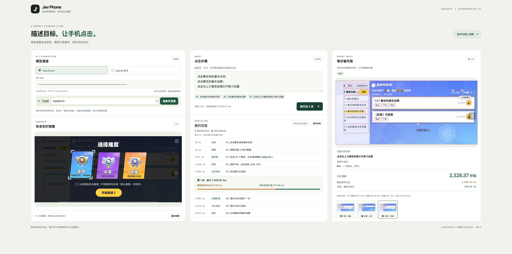
The Demo uses the same SDK: device view on the left, execution in the middle, and actual model input on the right.
Python 3.10+. Prepare a connected device and the appropriate model credentials, then install from the repository:
git clone https://github.com/dongxinsuperman/jev-phone.git
cd jev-phone
python3 -m venv .venv
.venv/bin/pip install -e '.[android]'
from getpass import getpass
from jev_phone import AndroidClicker
with AndroidClicker(
serial="YOUR_DEVICE_SERIAL",
api_key=getpass("OpenRouter Key: "),
provider="openrouter",
) as phone:
report = phone.run("Open default difficulty settings; select medium difficulty; save changes")
# Single step: phone.click("Open default difficulty settings")
print(report["results"])
Each step describes one tap target. run() splits on English or Chinese commas, semicolons, periods, question marks, exclamation marks, and newlines, up to 20 steps. Each model request contains only the current step.
| Platform | Installation | Connection |
|---|---|---|
| Android | pip install -e '.[android]' |
AndroidClicker(serial=..., api_key=...) |
| iOS | pip install -e . |
IOSClicker(wda_url=..., api_key=...) |
| HarmonyOS | pip install -e '.[harmony]' |
HarmonyClicker(serial=..., api_key=...) |
Supports OpenRouter multimodal Decisions and official OpenAI Decisions. For the official provider, use provider="openai" with its credentials. Install from source or a wheel; the package is not yet published to PyPI.
SDK guide, Chinese · Device setup, Chinese · Single-device example · Parallel devices
A UI tree provides geometry, but its labels may not express an icon's meaning. A screenshot provides appearance, but the interpretation still needs an executable location. Jev Phone combines both: use the tree to build regions, use the image to interpret the target, ask the model to choose an ID, and let the driver tap the corresponding region.
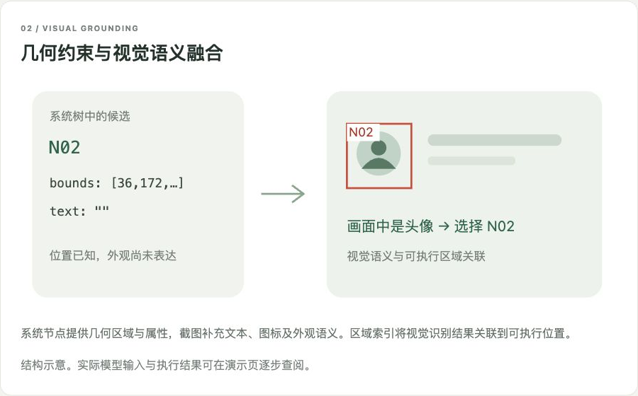
Candidates come from the current frame. The model returns an ID, NOT_FOUND, or UNCERTAIN. The SDK maps a valid ID to the region's center. Grounding or tap failures stop subsequent steps and preserve partial results.
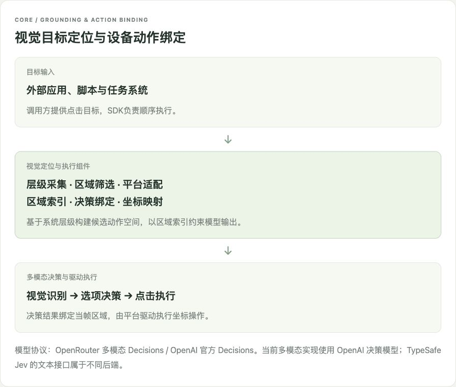
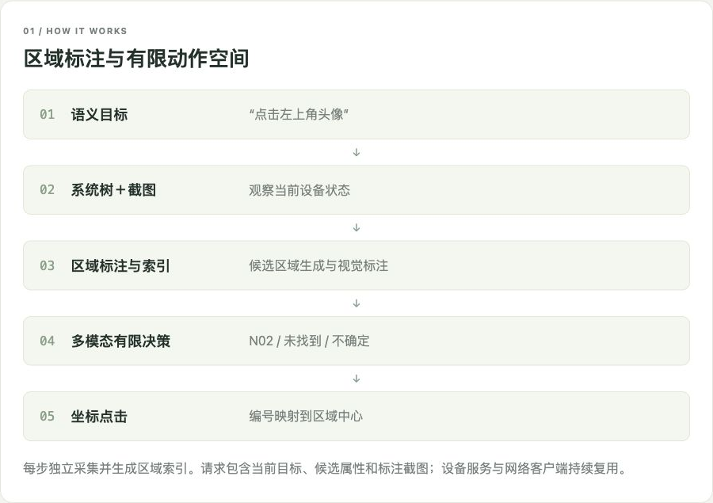
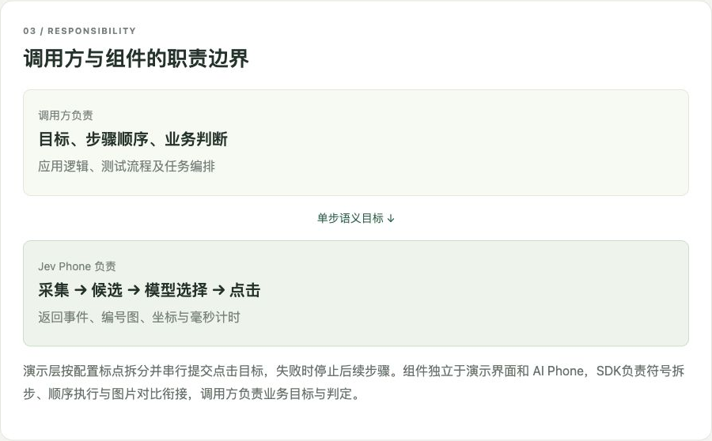
The original artwork retains its Chinese labels; this README explains the same concepts in English.
Capture, dimensions, UI trees, taps, and image comparison use the tuned AI Phone V3 channels. Between steps, compare frames and reuse the final frame so the next step does not immediately observe a transition animation. No transition wait is added after the final step, and there is no extra result screenshot after every tap.
The caller owns target order, business assertions, caching, and error handling. The SDK returns annotated images, selected IDs, coordinates, driver status, and timing. Driver completion confirms the tap API returned; the caller evaluates the business outcome.
All platforms share the grounding flow. Adapters handle hierarchy, screenshots, coordinate units, and drivers. The target regions from the website's evidence are enlarged below; expand the gallery for original cards and full annotated images.
| Android · Physical / Emulator | iOS · Physical / Simulator | HarmonyOS · Physical / Emulator |
|---|---|---|
| UiAutomator2 | WDA / XCTest | UITest / hmdriver2 |
| Native capture, tree, and tap | On-demand capture and pixel/point mapping | Native capture, hierarchy, and direct tap response |
Android · N31
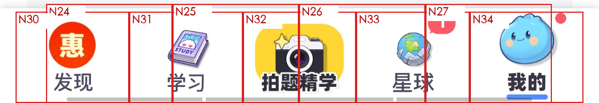
iOS · N25
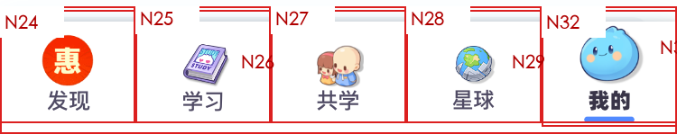
HarmonyOS · N47
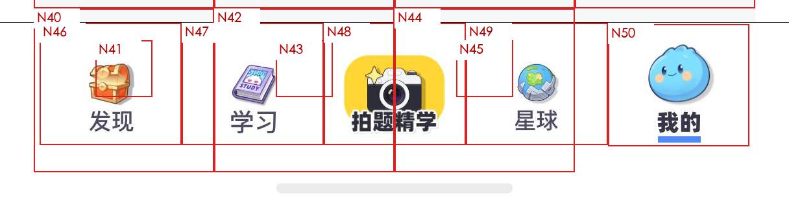
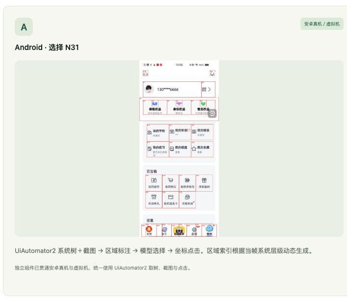
Full Android image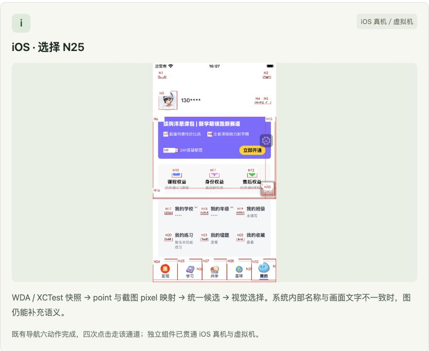
Full iOS image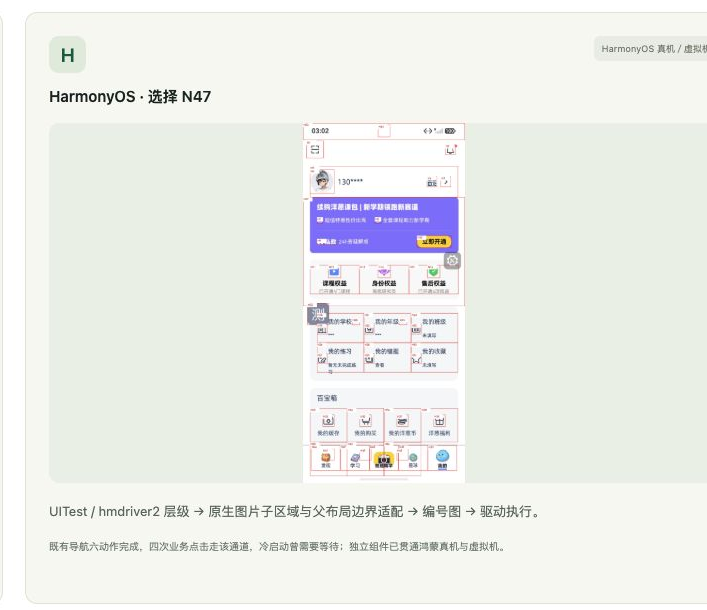
Full HarmonyOS imageThese source images come from Android physical-device, iOS simulator, and HarmonyOS emulator experiments. Platform headings identify the currently supported environments. Validation overview, Chinese
Millisecond-level local processing describes stages such as candidate generation, annotation, and encoding. Complete step time also includes device capture, model requests, taps, and the transition following that step. These stages are reported separately; model time is not substituted for full-step time.
| Existing measurement | Scope |
|---|---|
| 15–50ms | Local candidate processing, annotation, and encoding |
| 620ms median | Android non-model round |
| 493–729ms | Non-model range across nine runs of the same Android navigation sample |
These measurements come from an earlier experiment with a resident UiAutomator2 service. They exclude model requests, initialization, and step transitions. Full stage-by-stage records, Chinese cover dimensions, tree, screenshot, candidate processing, model round trip, tap, other overhead, transition, and complete step time.
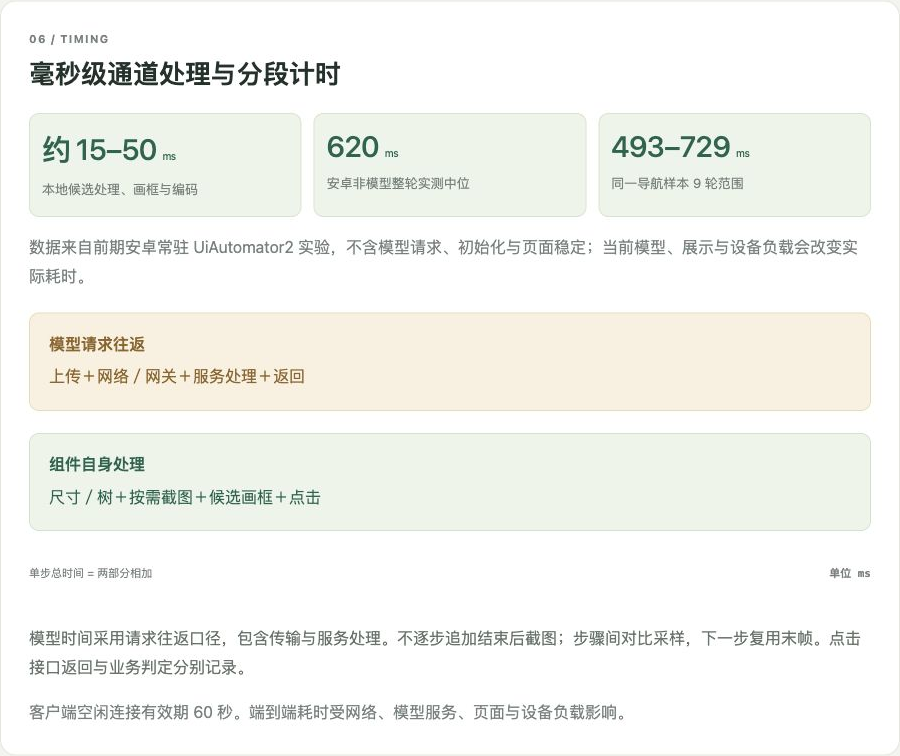
| Platform | Additional sampling interval |
|---|---|
| Android | 100ms |
| iOS | 200ms |
| HarmonyOS | 0ms |
Capture itself still takes time. When the comparison budget expires, V3 returns the last frame and continues. The tuned parameters and execution flow remain unchanged.
.venv/bin/pip install -e '.[demo]'
.venv/bin/jev-phone-demo
Prepare adb, scrcpy, and ffmpeg, then open http://127.0.0.1:8765/. The web Demo provides an Android read-only mirror, execution logs, and annotated images. Three-platform SDK integration does not require the webpage. Refreshing the page clears the connection and key.
The current delivery supports single and sequential taps. Planning, business assertions, text entry, scrolling, long presses, app launch, and device scheduling belong to the external system. Users prepare device authorization, WDA signing, and emulators. Screenshots and execution records remain local artifacts.
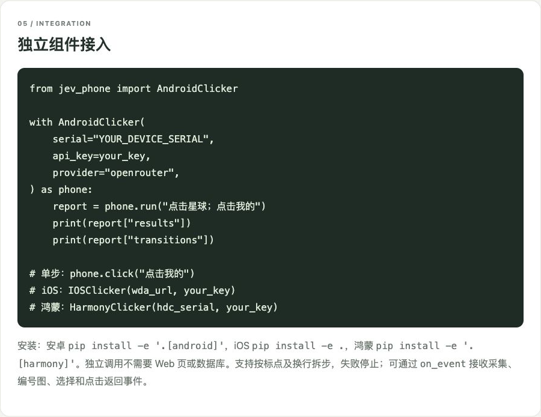
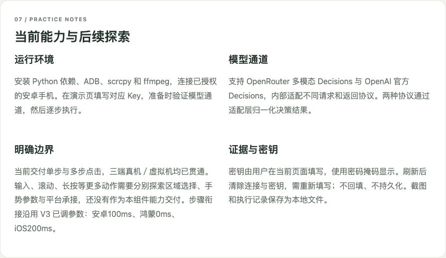
English · 中文 · Complete original website guide · MIT · Attribution